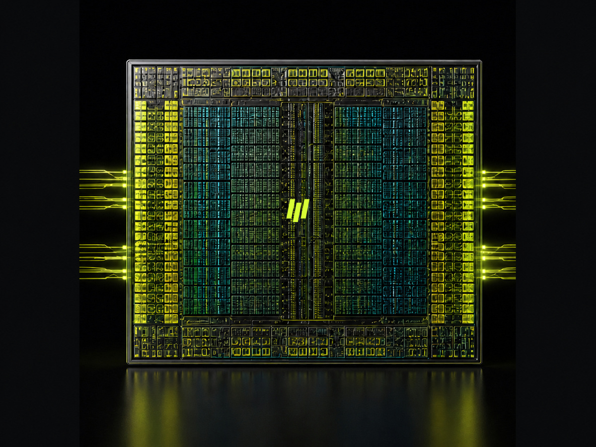
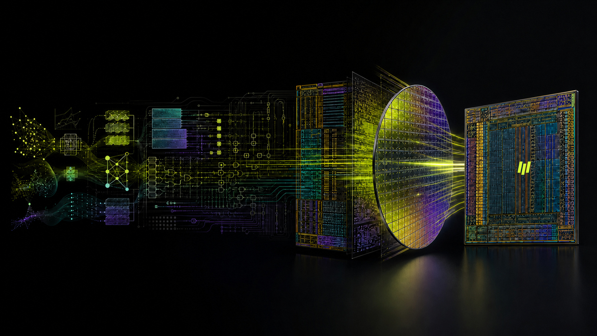
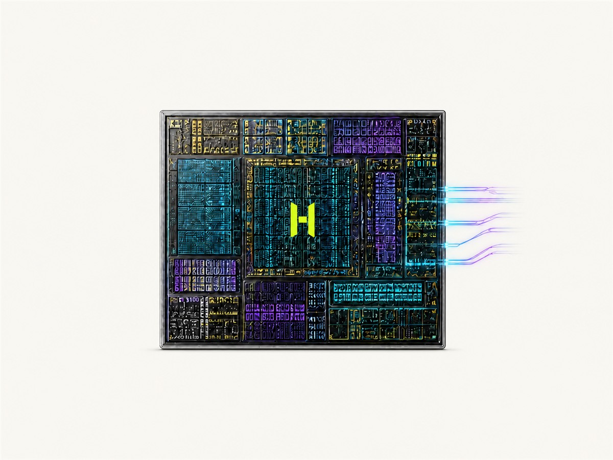
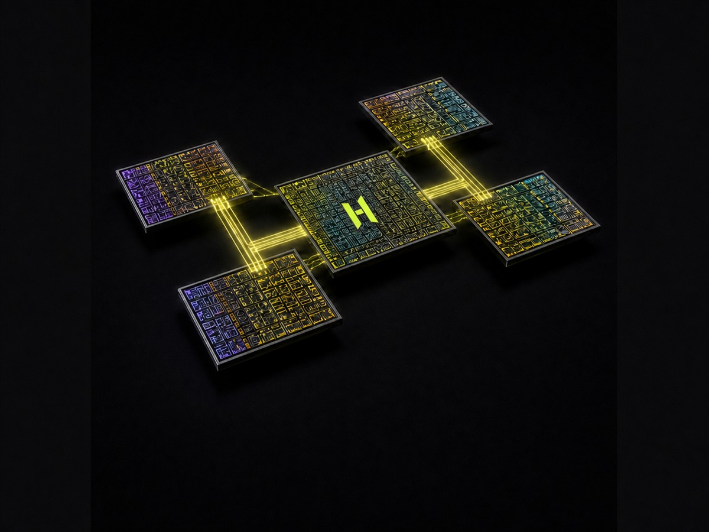

HCX D1
数据中心 AI 计算芯片面向大模型推理、微调与高密度服务器的可扩展计算芯片。
- 张量、向量与标量协同执行
- 多级片上存储与显存接口规划
- 芯片间高速互联与多卡扩展

HELIOS 元芯 / HOLYCORES AI SILICON
面向数据中心、边缘设备与规模互联，自主构建计算核心、片上存储、数据流、互联和软件接口。
HOLYCORES 从真实模型和部署边界出发，联合设计计算核心、存储层级、数据搬运、封装互联与编译运行时。目标不是堆叠未经验证的峰值，而是让有效算力、可编程性、能效与系统扩展形成可以持续演进的基础。
PLANNED SILICON PORTFOLIO

面向大模型推理、微调与高密度服务器的可扩展计算芯片。

为机器人、视觉设备与现场智能整合推理、控制和高速 I/O。

以模块化裸片、先进封装与统一互联构建可组合算力。
COMPUTE ARCHITECTURE
张量、向量与标量执行资源协同，兼顾主流算子与自定义内核。
通过局部存储、共享缓存和显存路径降低不必要的数据往返。
面向算子依赖、并行模式与芯片扩展组织低延迟数据移动。
以隔离、调度与遥测能力支持多模型和多租户运行。
芯片设计同时考虑片上 SRAM、外部内存、主机接口、芯片间互联与先进封装。带宽、容量、延迟、功耗和可制造性需要在同一系统边界内验证。
让高复用数据停留在更接近计算的位置。
针对模型权重、KV Cache 与中间激活规划数据路径。
统一考虑封装内、板级和系统级互联。
HARDWARE / SOFTWARE CO-DESIGN
ENGINEERING EVIDENCE
工作负载画像、性能建模与功耗估算。
功能验证、形式验证、时序、功耗与可测性。
芯片特性、封装、板级、稳定性与可靠性验证。
精度、性能、扩展、兼容性和长时间运行验证。
FAQ
页面描述的是自主研发方向与规划边界。流片、量产、供货和最终规格将按工程成熟度正式发布。
芯片是底层计算基础，NOVA 与 SPARK 分别把芯片能力封装为数据中心加速卡和边缘计算产品。
可提供目标模型、基线、部署环境和成功指标，与团队共同定义评估路径。
从真实工作负载开始